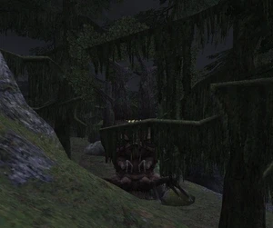

Level 75 reference · Zenith rules
|
Job: Notorious Monster |
 |

|
Zone |
Level |
Drops |
Steal |
Spawns |
Notes | ||||||
|
55-60 |
1 |
T(H)
| |||||||||
|
HP = Detects Low HP; M = Detects Magic; Sc = Follows by Scent; T(S) = True-sight; T(H) = True-hearing JA = Detects job abilities; WS = Detects weaponskills; Z(D) = Asleep in Daytime; Z(N) = Asleep at Nighttime | |||||||||||
- 21-24 Hour Repop
- Lottery spawn from Fraelissa. (Similar mechanic to that of Biast.)
- Has Auto Regen
- Will pop a weaker Sapling NM called Duessa everytime it use Pinecone Bomb.
- The Duessas will automatically die once Fradubio is defeated.
- Killable by: Party of 3 Level 70+, 70+ Thief/Ninja or Ninja along with any 70+ mage to heal and debuff, solo by some Level 75 jobs.
- Remains in the H-10, I-10 area. Chases but does not Draw In. Will stop chasing after gaining enough distance with Flee or Gravity
- Also seen in J-10/11 area.
- Has about 10,000 HP
- Bellicose Mantle is not a 100% drop.
Adapted from Eden Wiki: Fradubio · Contributors and history · CC BY-SA 4.0. Revision 44697. Layout, links and optional background text adapted for Zenith.